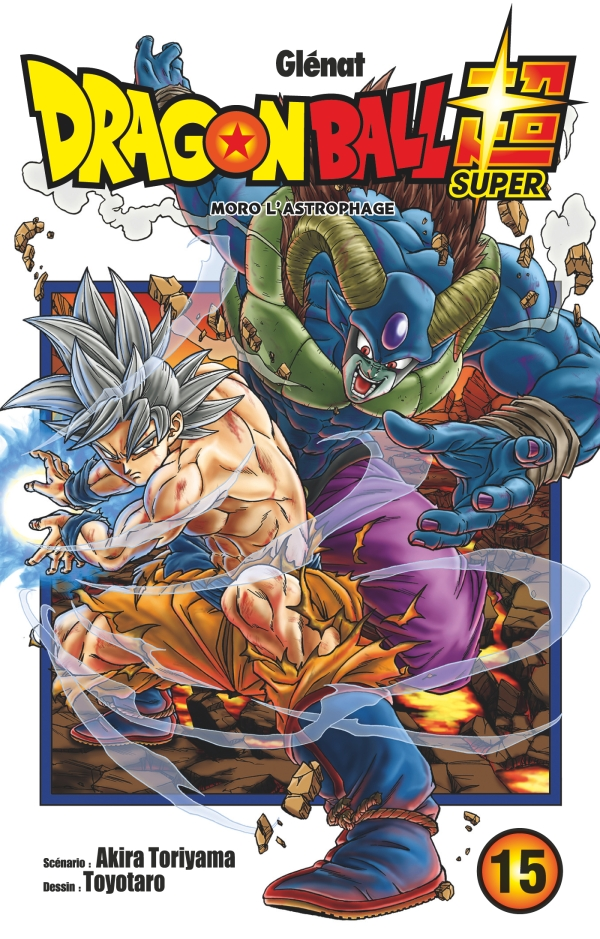

Après avoir parfaitement maîtrisé le réflexe transcendantal, Goku parvient à repousser Moro. Mais dans son bras gauche qui avait été sectionné, Moro avait stocké les capacités de Merus, desquels il tire le réflexe transcendantal à son tour. Comment Goku réagira-t-il face au pouvoir divin ?
Ch. 65 : Son Goku le Terrien
Ch. 66 : Moro l'astrophage
Ch. 67 : Le dénouement, et la suite...
Ch. 68 : Granola le survivant